Moño redondeado alto

Sin duda alguna, uno de los peinados clásicos que nunca pasará de moda es el moño para hombres.
Existen varios estilos, y este redondeado es uno de los de moda esta temporada.
Te recomendamos aplicar una pomada de fijo fuerte para moldear el moño redondo.
Degrade teñido
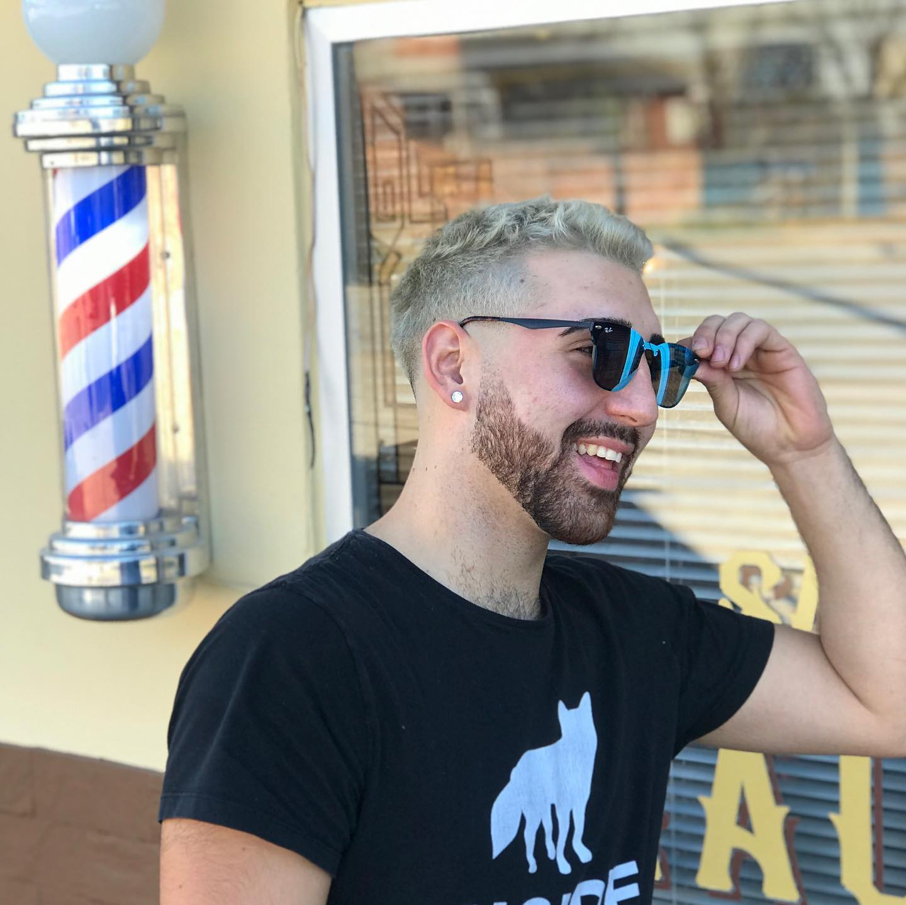
Una combinación entre el famoso Corte fade y un teñido en rubio para lograr una excelente combianción.
Luciendo la nuca con los lados más rapados y el resto del cabello dejándolo más largo conforme sube hacia la parte superior de la cabeza.
De yapa una barba corta y sumamente prolija.
Fade undercut
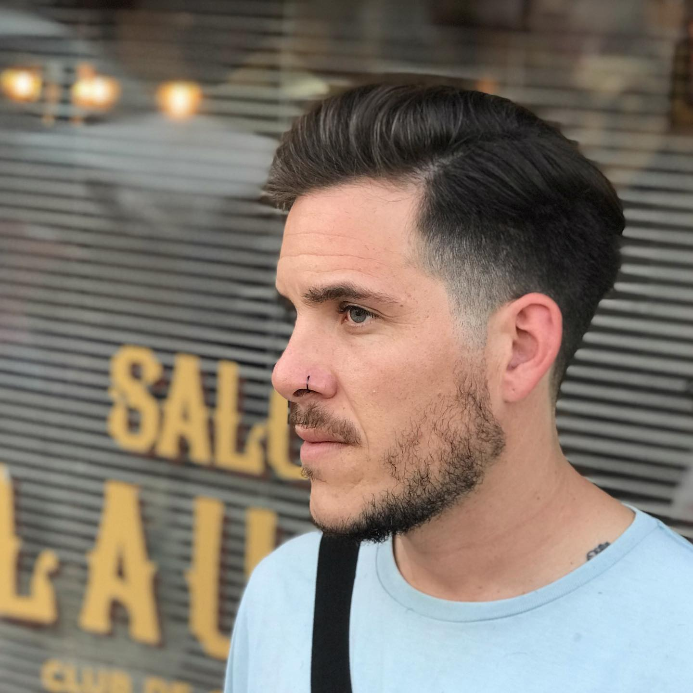Este podría haber sido un undercut como cualquier otro. Sin embargo, fue un paso más allá al apostar por el corte de pelo degradado, lo que le aporta otra complejidad al look. Arriba, un man bun. Abajo, una barba poco tupida pero bien recortada.
Skin fade con jopo
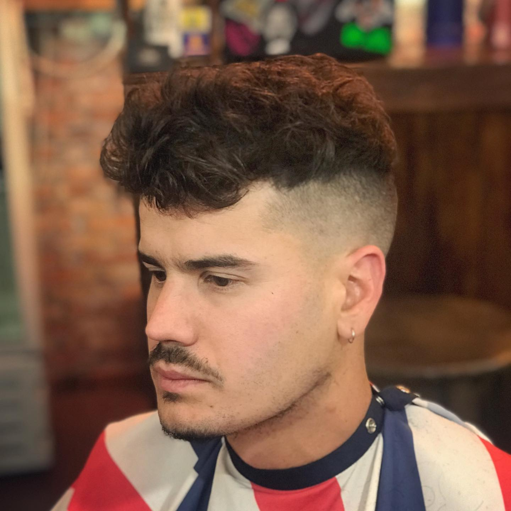Este estilo de corte de pelo degradado es, quizás, el más radical, puesto que el rapado es al ras. El corte permite ver la piel, por eso se le llama skin fade o bald fade. De ahí que sea de alto mantenimiento. El suyo es de altura media y lo combinó con un jopo o tupé.
Corto en degrade y remarcado de barba y bigote
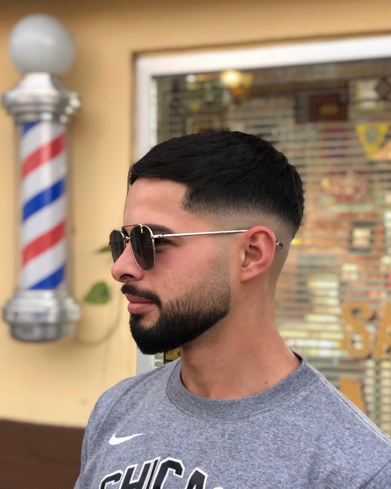
Una clásica combinación de degrade tanto en pelo como en barba, logrando así una perfecta amonía en el look del cliente.
Se utiliza mucho para redondear la cara.
Low fade
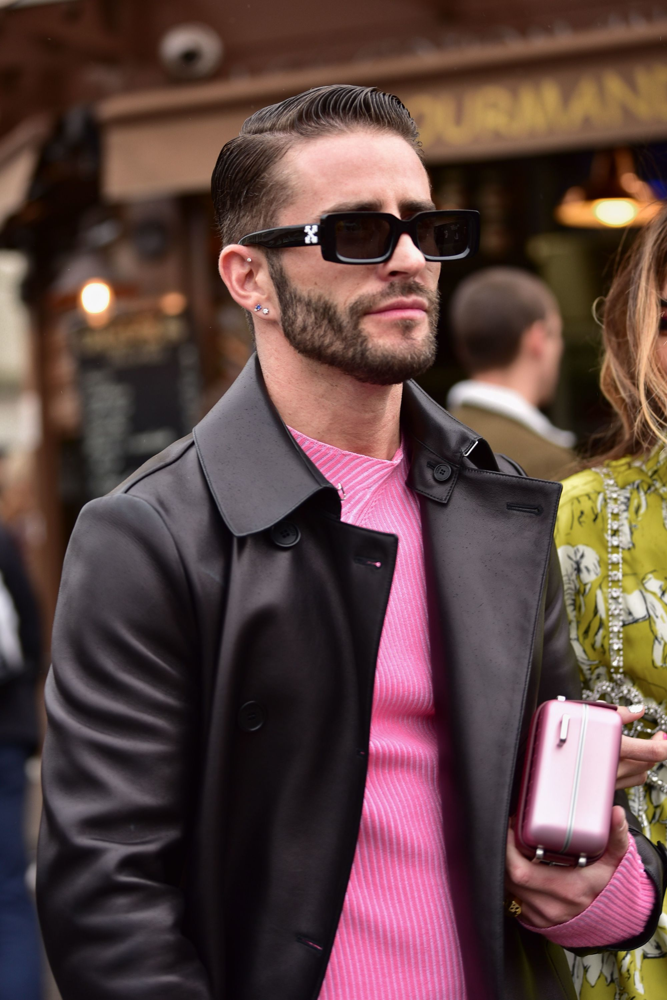
Volumen en la parte superior, comodidad y frescura cerca de la nuca. Así luce el corte de pelo degradado bajo o low fade.
La clave es, por un lado, mantenerlo bien cortándolo para mantener las capas bien delimitadas.
Por otro lado, tomarse el tiempo para darle un styling.
Corte mullet
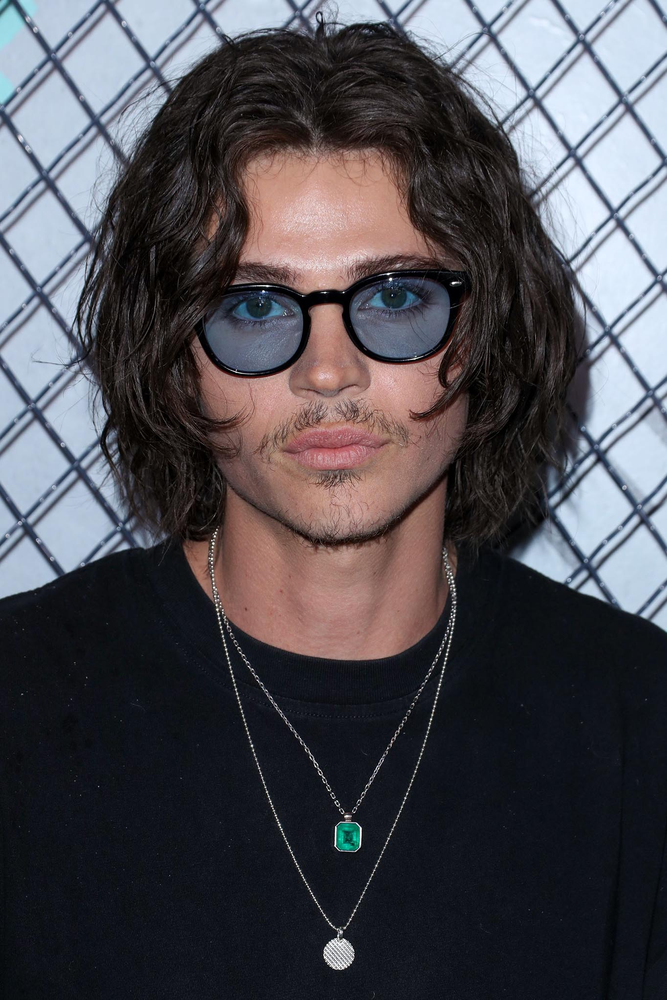
Es, en efecto, el mejor de los dos mundos porque el corte mullet lleva la parte de atrás larga mientras el resto del pelo va corto, con un marcado contraste de extensiones.
Este estilo es una buena puerta de entrada para los hombres de pelo largo.
🍃 F R E N C H - C R O P 🍃
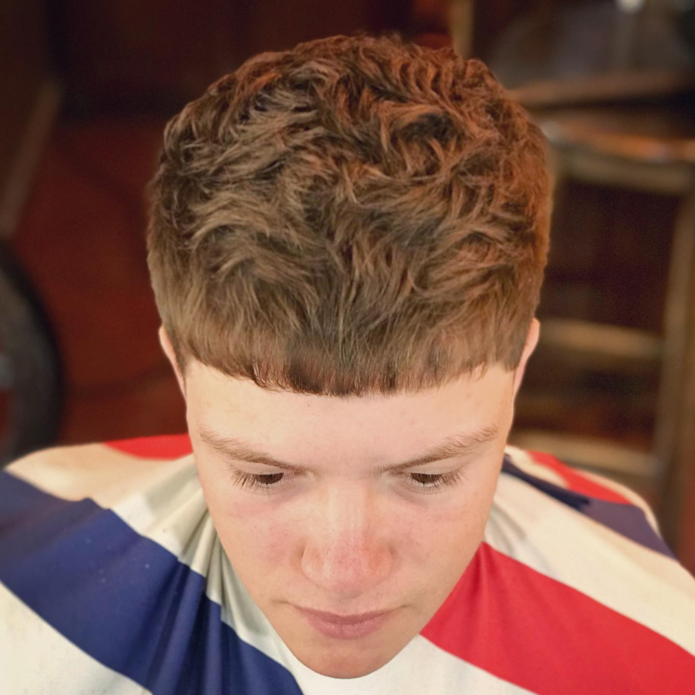
Se trata de una versión moderna del popular corte de los 90 llamado "estilo César", inspirado en el emperador romano, César Augusto.
El #Hoy moderno “French Crop” es más desordenado y estiloso que nunca, caracterizándose principalmente porque es un corte de pelo realizado en capas, #texturizado , dejando el cabello corto atrás y a los lados, mientras que la parte superior se deja un poco más larga para así peinarla hacia adelante.
Debemos decir que es un corte ideal para cuando quieres llevar el pelo medianamente corto, pero con estilo, ya que vos decidís la longitud que quieres tener tanto a los lados, como en la parte de arriba.
El French Crop es un estilo ideal para todo tipo de cabello; rizado, liso, grueso o delgado e incluso para aquellos que tienen remolinos o cabello rebelde difícil de peinar.
Con rastas
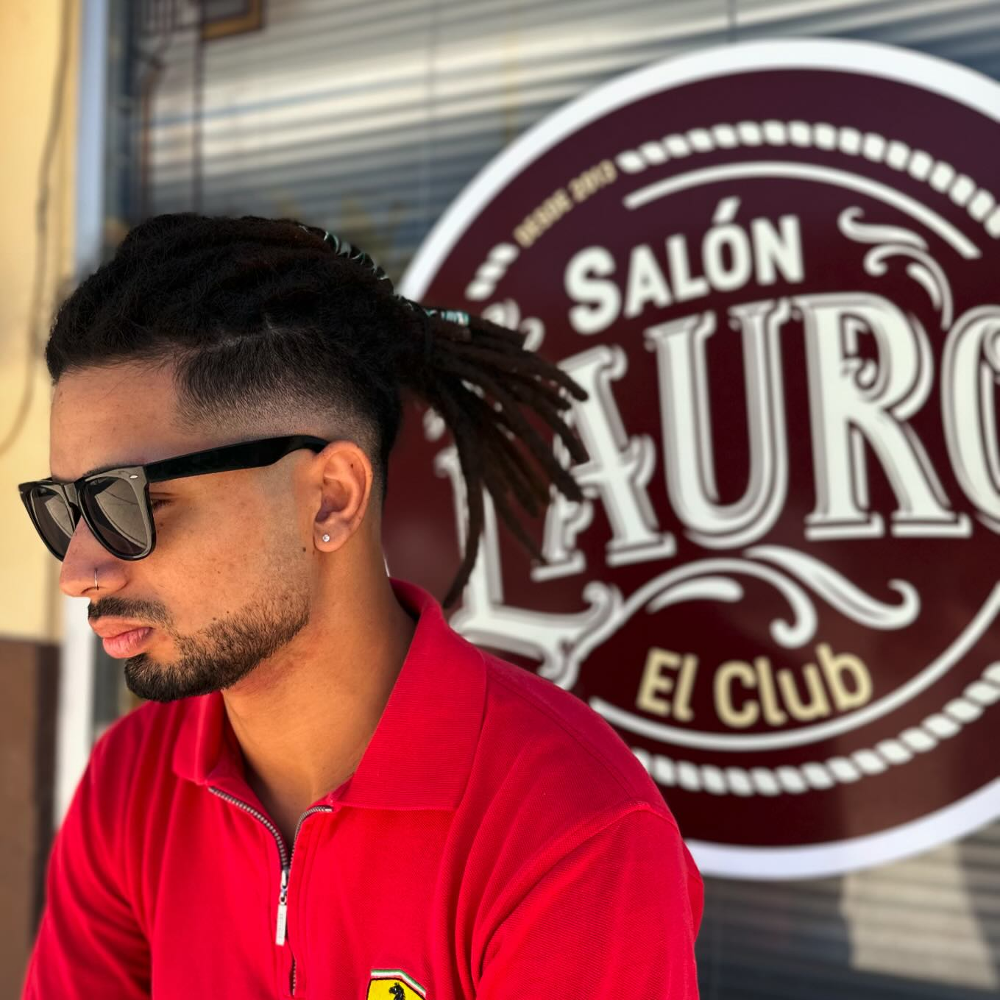Le sugerimos en este caso un #midfade para acompañar y poder presumir ese look rastafari de la mejor manera.. Ey! y que no falte la barba eh !
¡Estilo largo con muuucha onda!
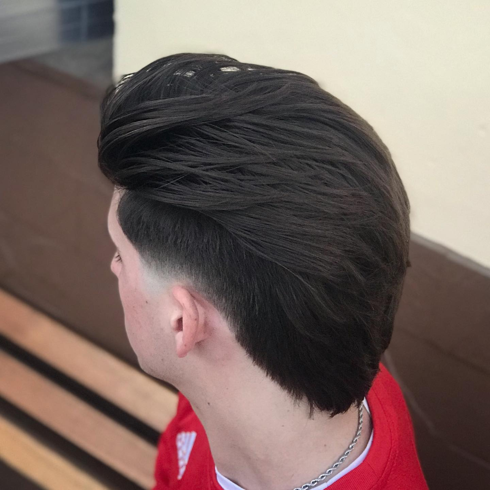
Consideramos escencial incluir un degradado en patillas y nuca (reducción progresiva de cabello) a fines de conseguir una armonía craneal y estética visual.
Dicho esto, la clave para conseguir un buen estilo largo además del corte, es definirlo con una pomada de efecto mate natural Legends así sellamos y definimos el style
¡Para los más chicos!
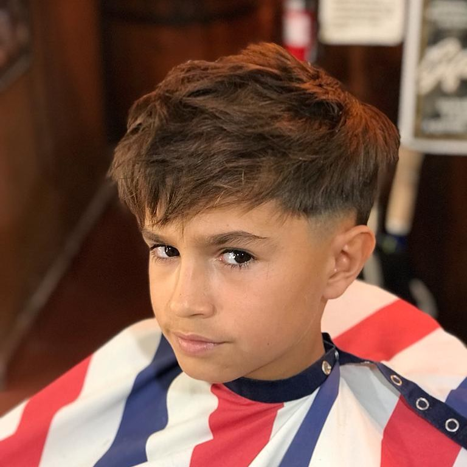
YOUNG GENTLEMAN CUT
Si hay algo que nos caracterizamos en “ El Club “ es la onda que logramos en lo Caballeros de todas las edades.👦🏻
Les dejamos este corte fresco, con cresta baja oscura + textura y sobretodo, mucha onda! 😎
Mechas y Reflejos
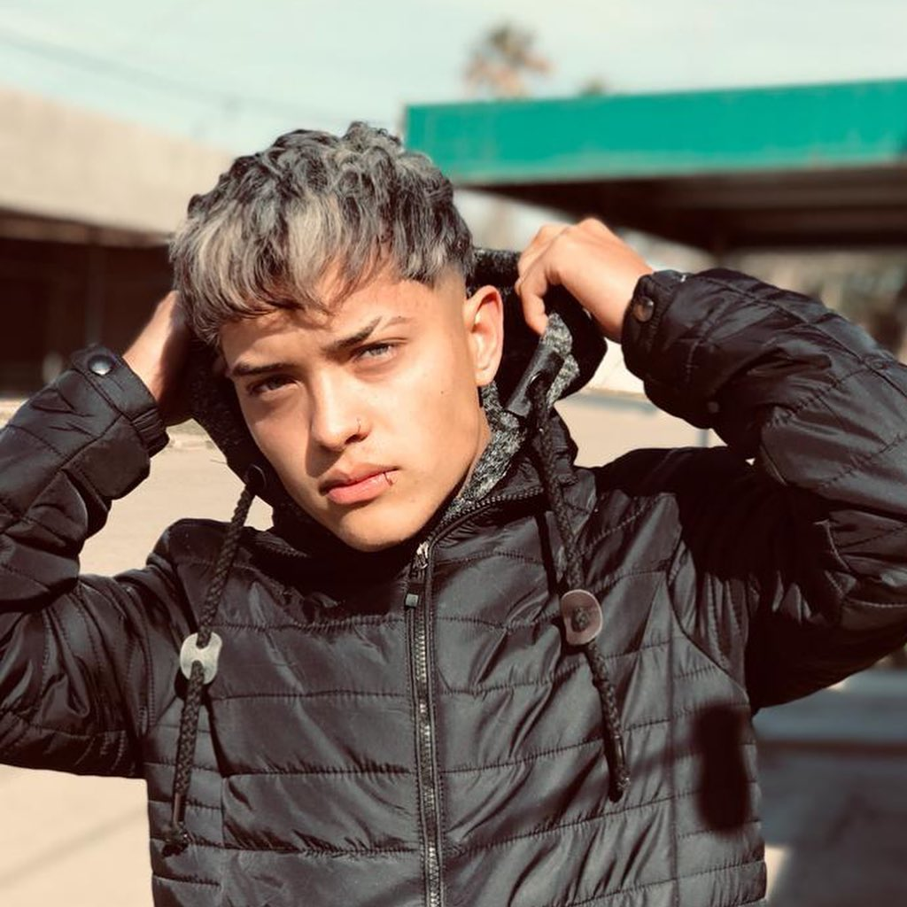Sumale a tu corte ese plus, ese color que estuviste viendo durante todo el año pero no te animaste! #Mechas #Reflejos y también realizamos #Global ( cabeza completa ) en el color que vos quieras.